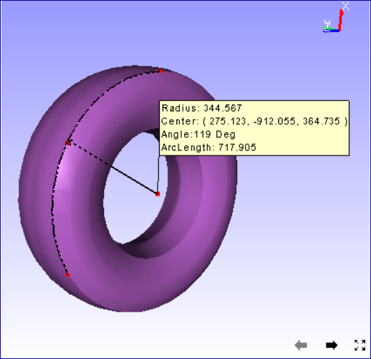

Measurement¶
The procedures to measure distance between 2 points and measuring the arc lengths are explained here. Users can measure the following:
Distance Measurement
Arc Measurement
Vertex Info
Export to CSV
Note
Fonts of measurement labels can be modified using Label Settings dialog.
Measure Options
3D Distance
Point to Point
Point to Edge
Point to Face
Arc
3 Point Arc
Snap Vertex
Vertex Info
This helps user to measure shortest 3D distance between two points on the model. Annotation labels with measured value will be attached to the dimension lines.
User can measure the linear distance in the following ways,
Point to Point : Measures distance between two user picked points.
Point to Edge: Measures shortest distance between point and the edge picked by user.

Point to Face: Measures shortest distance between point and triangle picked by user.

How to measure distance between two points in the model?
Click the icon from toolbar.
Click 2 points of interest on the model to measure the distance.
The points clicked are highlighted in red color and a line is drawn between the end points
An annotated label with distance value is attached to the middle point of line drawn.

Double clicking on the measure allows to format the label data and renaming the measure name.
How to measure distance between point and an edge?
Click ‘Point to Edge’.
Click a point on a model and click on a model for closest triangle edge.
The point and the closest edge will be highlighted in red color. Edge is extended if foot of perpendicular does not lie in the edge segment.
An annotated label with distance value is attached to the middle point of line drawn.

How to measure distance between point and a face?
Click ‘Point to Face’.
Click a point on a model and click on a model triangle.
The point and triangle points will be highlighted in red color.
An annotated label with distance value is attached to the middle point of line drawn.

How to measure circular curve or an arc?
Click down arrow near measure icon in toolbar.
Click ‘3PointArc’ option.
Click on 3 points of interest on the model.
An arc is drawn from first point to third point passing through the second point.
All three points are highlighted in red color.
An arrow is drawn from center of arc to the curve to denote the radius.
An annotated label with arc information is attached to the center of arc.
Curve hidden behind the model is drawn with dashed lines.

What is the use of Snap Vertex option?
User has to pick points in the model for measuring.
Using this ‘Snap Vertex’ option, user can pick the nearest vertex in the model.
It helps user to measure with extended accuracy.
Click ‘Snap Vertex’ in the drop down menu to enable this option.
How to display coordinates of a point on the model?
Click ‘Vertex Info’ in the drop down menu to enable this option.
Click on the model.
The coordinates of the clicked position is displayed in a label.
This label is temporary and is cleared on users next click.
User can not save this label into viewpoint.
This option helps in measure and section modules.
Export to CSV¶
This function helps user to export all visible measurement data into a csv file.
User can achieve this either through “Tools | Measurement | Export to CSV” in menu bar or “Measure | Export to CSV” in context menu.
Sample CSV file
# Application Name: VCollab Pro X
# Application Version: 4.12.121.605
# Date & Time : 21-10-2021, 18:43:30
# Current User : karuna
# Measure Name, Measure Value, Model Name 1, Model Name 2, Node ID 1,X1,Y1,Z1, Node ID 2,X2,Y2,Z2
Measure 1,43.046,body1,Fadjuster,NA,-13.8797,-19.9479,41.2141,NA,-0.179211,3.7484,7.99158
Measure 2,31.718,body2,Fbody,NA,22.7075,-18.5456,32.922,NA,4.77808,-33.8141,11.6751
|